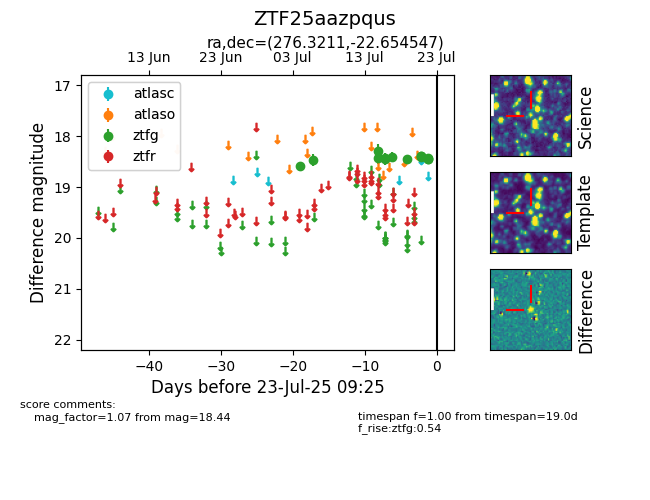

Target ZTF25aazpqus at 2025-07-23 11:48, see:
FINK: fink-portal.org/ZTF25aazpqus
Lasair: lasair-ztf.lsst.ac.uk/objects/ZTF25aazpqus
ALeRCE: alerce.online/object/ZTF25aazpqus
alt names
ZTF25aazpqus (ztf,fink)
coordinates:
equatorial (ra, dec) = (276.3211,-22.65455)
galactic (l, b) = (9.8504,-4.70987)
photometry
last ztfg=18.44
14 ztfg detections
